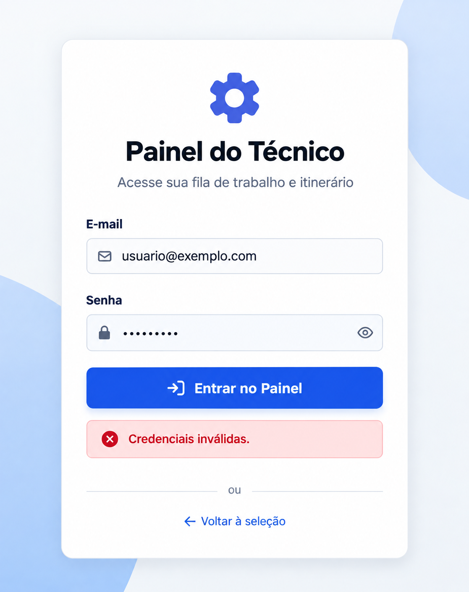

Sobre o projeto
Projeto de testes de software realizado em um sistema de gestão, com foco nas funcionalidades disponíveis para o perfil de Técnico.
Escopo dos testes
O escopo do projeto contempla as funcionalidades disponíveis para o perfil de Técnico.
- Fila de Trabalho
- Agenda
- Carros
- Contratos
- Itinerário
- Meu Ponto
- Novo Chamado
Estratégia de Testes
Os testes são planejados e documentados por meio de casos de teste, considerando diferentes cenários de uso das funcionalidades avaliadas.
Casos de Teste
Os casos de teste são documentados com seus respectivos cenários, passos de execução, resultados esperados e status.
Resumo da execução - Login
CT-001 - Acessar a tela de login do Painel do Técnico
Funcionalidade: Login
Prioridade: Alta
Resultado esperado: O sistema deve direcionar o usuário para a tela de login do Painel do Técnico.
Resultado obtido: O sistema direcionou o usuário corretamente para a tela de login.
Status: PASSOU ✅
CT-006 - Realizar login com e-mail incorreto
Funcionalidade: Login
Prioridade: Alta
Resultado esperado: O sistema não deve permitir o login com credenciais incorretas e deve informar ao usuário que as credenciais são inválidas.
Resultado obtido: O sistema impediu o login e exibiu a mensagem "Credenciais inválidas."
Status: PASSOU ✅
Evidências de Teste
As evidências abaixo demonstram alguns dos cenários executados durante os testes, utilizando dados e interfaces adaptados para preservar informações do sistema original.
CT-006 - Login com e-mail incorreto

Interface demonstrativa criada para representar o cenário testado, preservando os dados e a identidade visual do sistema original.
Ferramentas e Técnicas
- Testes manuais
- Criação e execução de casos de teste
- Testes positivos e negativos
- Microsoft Excel - documentação e acompanhamento dos testes